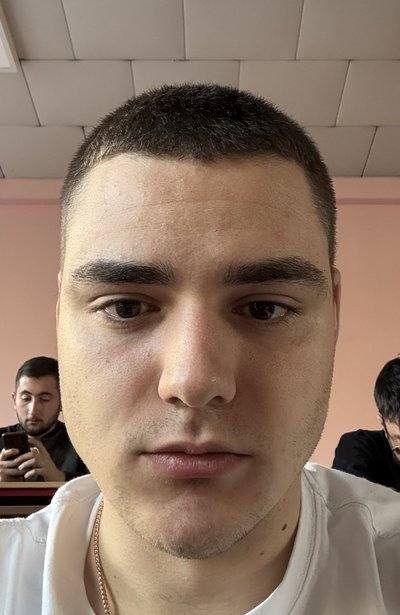
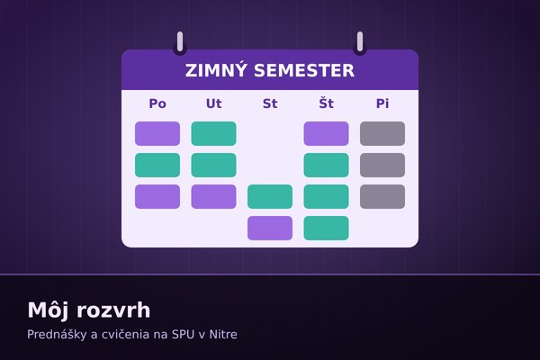
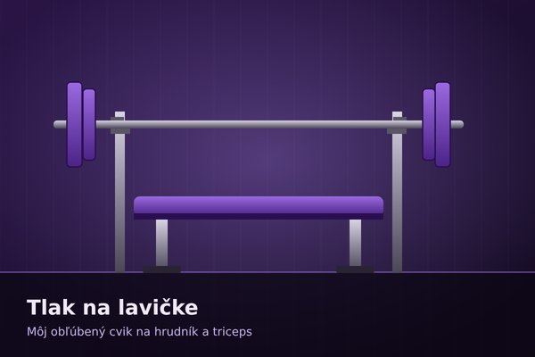

O mne

Pochádzam z Ukrajiny a už šesť rokov žijem na Slovensku. Prečítajte si viac o mne, o školách, ktoré som navštevoval, o mojich záľubách a zručnostiach.
Čítať viac...Ahoj, som Daniil a som rád, že ste zavítali na moju webovú stránku. Nájdete tu všetko podstatné o mne – odkiaľ pochádzam, kde študujem a čomu sa venujem vo voľnom čase.
Stránka je rozdelená na niekoľko častí: v sekcii O mne sa dozviete niečo o mojom živote a vzdelaní, v Rozvrhu uvidíte, ako vyzerá môj študentský týždeň na SPU v Nitre, na podstránke Moje hoby vám predstavím svet posilňovania a v časti Kontakt nájdete spôsob, ako ma zastihnúť.

Pochádzam z Ukrajiny a už šesť rokov žijem na Slovensku. Prečítajte si viac o mne, o školách, ktoré som navštevoval, o mojich záľubách a zručnostiach.
Čítať viac...
Ako vyzerá môj týždeň na Fakulte ekonomiky a manažmentu? Pozrite si prehľadný rozvrh prednášok a cvičení v zimnom semestri.
Čítať viac...
Mojou najväčšou záľubou je posilňovanie. Prečítajte si, prečo ma baví, ako trénujem a pozrite si galériu.
Čítať viac...Chcete sa so mnou spojiť? Nájdete tu môj e-mail, telefónne číslo, adresu aj čas, kedy ma môžete najlepšie zastihnúť.
Čítať viac...